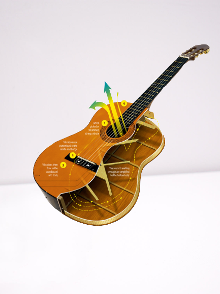

1 / 3

The Classical Guitar
The classical guitar is one of the most prominent musical instruments in history. Created in the 1500s, the guitar has strummed its way to popular culture by playing to a variety of musical styles, from flamenco to rock. Without the classical guitar, music, as we know it today. will less likely strike a chord.
The guitar's body design is very crucial. The most important piece is the soundboard mounted on the front of the body. Its job is to make the guitar's sound loud enough for us to hear. The two widenings called 'bouts' also affect the tone.
In order to generate sound on the guitar, the strings must either be plucked or strummed to make the strings vibrate.
Vibrations are then transimitted to the saddle and the bridge of the guitar. From there the vibrations flow to the soundboard and body to be amplified by the hollow body.
Read More
2 / 3

The Building Process
A guitar builder or luthier’s work starts with wood selection. They are bent, thinned, trimmed, or carved to suit their functions. Then, assembly begins with the gracefully bent sides going into a mold. Next, the two sides of the top are glued together, and the top is thinned to about one-tenth of an inch. The rosette is added and the sound hole cut. Bracing is added in carefully selected positions and trimmed. The top is then glued to the body.
Having “tap-tuned” the body, the next step is to add the back. The two halves of the back are joined and braced. With a power router, the builder now cuts channels for the binding and purfling. After they are glued on, the body is essentially complete. Next, a mahogany or maple neck is carved, and an adjustable metal truss rod is inserted. Fret slots are cut at exact locations, and frets are added.
The attachment of the neck to the body must be done to exacting specifications so that, when the bridge and saddle are installed, the strings will be close to the height needed. The guitar will be leveled and polished, and tuners get installed on the headstock. After months of detailed work, the new instrument sings out, its voice unique among all guitars.
Read More
3 / 3
The Beauty of the classical guitar
A guitar can used to play amazing musical pieces, consisting of melodies and chords alike. One of the distinct features of the guitar is that a melody and accompaniment can be played at the same time.While a classical guitar is best enjoyed playing solo melodies, playing with other guitarists can also be very enjoyable. Yet one of the most attractive features of the guitar is that it is in a world of its own when combined with singing and other solo instruments.
Nylon strings can faithfully produce tones from subtle differences in touch, enabling the guitarist to reproduce subtle changes in sound and a delicate balance in tonal strength. String tension can be utilized to recreate a range of sounds-sharp and soft-that may resemble that of a harp, cello or flute, or even the voices of a man or woman.
Read More
×